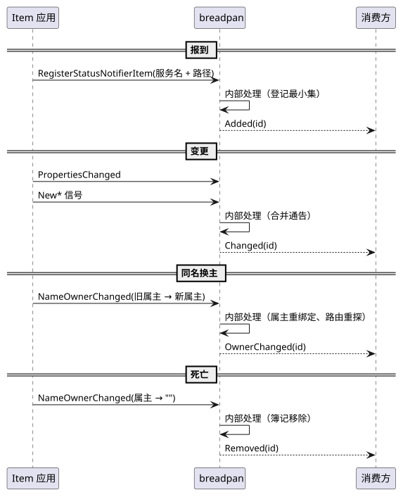
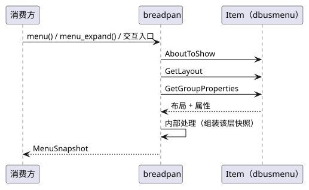

breadpan 协议契约
本文档定义 breadpan 在会话总线上实现的外部协议边界：StatusNotifierWatcher 协议面与 DBusMenu 读取。 术语见 USER §1，完整权威定义见 reference/SNI.clean.html 与 reference/com.canonical.dbusmenu.xml。
1. 术语
| 术语 | 定义 |
|---|---|
| 协议面 | breadpan 在会话总线导出的 org.kde.StatusNotifierWatcher 接口；外部 Item 应用经该面报到、查询与接收广播 |
| Watcher 名 | org.kde.StatusNotifierWatcher 总线名；本库启动时申请持有，持有期不可被替换 |
| 服务名 | Item 报到时登记的名字，即 TrayItemId；知名名或唯一名皆可，定义见 USER §1 |
2. 通用约定
- 前缀策略：本库自身命名（Watcher 服务名 / 协议面接口名 / 信号广播）只采用
org.kde.*；寻址外部应用（属性读取 / 交互调用）采用 fallback——org.kde.*优先、org.freedesktop.*回退，且超时的调用不再重试另一前缀；解析入站消息两前缀宽容处理。
3. 边界流程
3.1. 时序：Item 生命周期

- 报到、变更、同名换主与死亡的总线触发条件及交付事件见 USER §3.4。
- 同名换主时 id 与对象生死不变；死亡时按服务名或属主唯一名双条件清理。
3.2. 时序：Menu 流程

AboutToShow是 dbusmenu 规定的展示前置方法；GetLayout每次仅取一层，深层由消费方经menu_expand按需展开。- 菜单对象路径取自 Item 登记信息；消费方行为见 USER §3.5。
4. 接口
4.1. 协议面（DBus，对 Item 应用）
watcher 模块在会话总线导出 org.kde.StatusNotifierWatcher；该面是外部 Item 应用（图标提供方）与本库的唯一总线契约。
接受侧前缀处理见 §2；本面广播只经 org.kde.* 发出，不做多前缀重复播报。
| DBus 成员 | 类型 | 语义 |
|---|---|---|
RegisterStatusNotifierItem | 方法 | Item 报到：登记服务名 + 对象路径；同名重复报到幂等；同一对象以不同形态重复报到并入同一 id（升级机制见 USER §4.2 NameChanged） |
RegisteredStatusNotifierItems | 属性 | 读取：当前在册 Item 清单，按首见序输出（USER §2） |
RegisterStatusNotifierHost | 方法 | 兼容桩：受理即忘——自包含设计不对进程外 Host 负责 |
IsStatusNotifierHostRegistered | 属性 | 兼容桩：恒真——逻辑 Host 进程内在位；个别 Item 探测此接口后才报到 |
StatusNotifierItemRegistered | 信号 | 广播：Item 报到（协议面保真，供总线观察方） |
StatusNotifierItemUnregistered | 信号 | 广播：Item 离开（死亡清理） |
RegisteredStatusNotifierItems的顺序是本库附加契约：按首见序保持稳定；SNI 规范未规定该属性顺序。
错误应答
org.freedesktop.DBus.Error.InvalidArgs(message)
org.freedesktop.DBus.Error.Failed(message)| 错误名 | 含义 / 客户端动作 |
|---|---|
org.freedesktop.DBus.Error.InvalidArgs | 报到参数不合法（服务名为空、对象路径非法等）；修正后重试 |
org.freedesktop.DBus.Error.Failed | 服务端内部失败或已停机；记录并重试或降级 |
报到结果映射
| 情形 | 应答 / 副作用 |
|---|---|
| 参数解析失败（非法服务名、非法对象路径、空串） | org.freedesktop.DBus.Error.InvalidArgs；不写登记簿 |
| 运行时已停机或其它内部失败 | org.freedesktop.DBus.Error.Failed |
| 首次报到成功，或同名 / 同一对象重复报到 | 成功空应答；重复报到幂等，仅首次插入且快照栅栏已置位时广播 StatusNotifierItemRegistered 并入队 Added |
- 名持有不可被替换；自身停机 → 释放名字，等同角色下线；所有权丢失 →
Displaced（终局语义见 USER §3.7）。 - 登记簿记只在内存，不落盘。